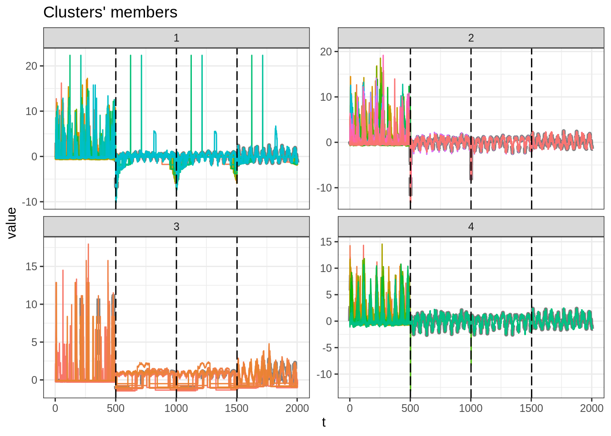
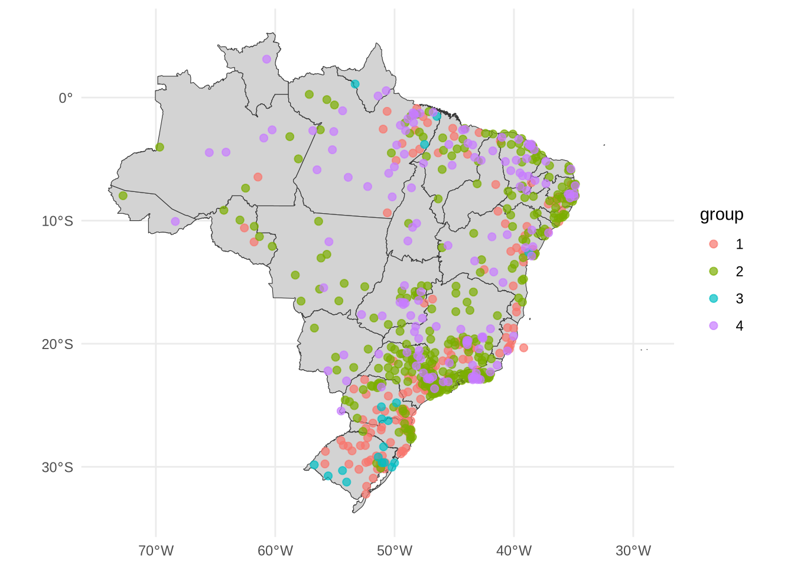

library(tidyverse)
library(lubridate)
library(arrow)
library(timetk)
library(dtwclust)
library(kableExtra)
library(tictoc)
library(sf)
library(DT)
source("../functions.R")Cases and climate variables multivariate clustering
This notebook aims to cluster the Brazilian municipalities considering climate indicators with multivariate clustering techniques.
Packages
Load data
Daily, scaled cases, maximum temperature, minimum temperature and precipitation.
tdengue <- open_dataset(sources = data_dir("bundled_data/tdengue.parquet")) %>%
select(mun, date, cases, tmax, tmin, prec) %>%
collect()
dim(tdengue)[1] 163326 6length(unique(tdengue$mun))[1] 326Data for maps.
uf_sf <- geobr::read_state(showProgress = FALSE)Using year 2010coords <- geobr::read_municipality(showProgress = FALSE) %>%
st_make_valid() %>%
st_centroid()Using year 2010Warning: st_centroid assumes attributes are constant over geometriesPrepare data
For clustering, the data must be a list of data frames with climate data and without date.
gdengue <- tdengue %>%
group_by(mun) %>%
arrange(date) %>%
select(-date)
mdengue <- group_split(gdengue, .keep = FALSE) %>%
tslist(simplify = TRUE)
names(mdengue) <- group_keys(gdengue)$munglimpse(mdengue[1:3])List of 3
$ 110002: num [1:501, 1:4] -0.5104 0.668 0.668 0.0788 0.668 ...
..- attr(*, "dimnames")=List of 2
.. ..$ : NULL
.. ..$ : chr [1:4] "cases" "tmax" "tmin" "prec"
$ 110012: num [1:501, 1:4] -0.4493 0.6488 1.1979 0.0997 0.0997 ...
..- attr(*, "dimnames")=List of 2
.. ..$ : NULL
.. ..$ : chr [1:4] "cases" "tmax" "tmin" "prec"
$ 110020: num [1:501, 1:4] -0.5195 0.1563 0.0718 -0.1816 0.3253 ...
..- attr(*, "dimnames")=List of 2
.. ..$ : NULL
.. ..$ : chr [1:4] "cases" "tmax" "tmin" "prec"DTW clustering
Try from 3 to 20 partitions.
tic()
stdw_clust <- tsclust(
series = mdengue,
type = "partitional", k = 3:20,
distance = "dtw_basic",
seed = 13
)
toc()8.622 sec elapsedCluster Validity Indices (CVI)
names(stdw_clust) <- paste0("k_", 3:20)
res_cvi <- sapply(stdw_clust, cvi, type = "internal") %>%
t() %>%
as_tibble(rownames = "k") %>%
arrange(-Sil)
datatable(res_cvi)m_sel_clust <- stdw_clust[[res_cvi[[1,1]]]]
plot(m_sel_clust)
Partitions size
table(m_sel_clust@cluster)
1 2 3 4 5 6
91 48 84 47 27 29 Partition results
coords <- coords %>%
mutate(code_muni = substr(code_muni, 0, 6))m_cluster_ids <- tibble(
code_muni = names(mdengue),
group = as.character(m_sel_clust@cluster)
) %>%
left_join(coords, by = "code_muni") %>%
arrange(group, name_muni) %>%
st_as_sf()saveRDS(object = m_cluster_ids, file = "m_cluster_ids.rds")m_cluster_ids %>%
select(group, name_muni, abbrev_state) %>%
arrange(group, name_muni) %>%
st_drop_geometry() %>%
datatable()ggplot() +
geom_sf(data = uf_sf, fill = "lightgray", color = "grey20", size=.15, show.legend = FALSE) +
geom_sf(data = m_cluster_ids, aes(color = group), size = 2, alpha = 0.7) +
theme_minimal()
Session info
sessionInfo()R version 4.3.2 (2023-10-31)
Platform: x86_64-conda-linux-gnu (64-bit)
Running under: CentOS Linux 7 (Core)
Matrix products: default
BLAS/LAPACK: /home/raphaelfs/miniconda3/envs/quarto/lib/libopenblasp-r0.3.25.so; LAPACK version 3.11.0
Random number generation:
RNG: L'Ecuyer-CMRG
Normal: Inversion
Sample: Rejection
locale:
[1] LC_CTYPE=pt_BR.UTF-8 LC_NUMERIC=C
[3] LC_TIME=pt_BR.UTF-8 LC_COLLATE=pt_BR.UTF-8
[5] LC_MONETARY=pt_BR.UTF-8 LC_MESSAGES=pt_BR.UTF-8
[7] LC_PAPER=pt_BR.UTF-8 LC_NAME=C
[9] LC_ADDRESS=C LC_TELEPHONE=C
[11] LC_MEASUREMENT=pt_BR.UTF-8 LC_IDENTIFICATION=C
time zone: America/Sao_Paulo
tzcode source: system (glibc)
attached base packages:
[1] stats graphics grDevices utils datasets methods base
other attached packages:
[1] DT_0.28 sf_1.0-14 tictoc_1.2 kableExtra_1.3.4
[5] dtwclust_5.5.12 dtw_1.23-1 proxy_0.4-27 timetk_2.8.2
[9] arrow_12.0.0 lubridate_1.9.2 forcats_1.0.0 stringr_1.5.0
[13] dplyr_1.1.2 purrr_1.0.1 readr_2.1.4 tidyr_1.3.0
[17] tibble_3.2.1 ggplot2_3.4.2 tidyverse_2.0.0
loaded via a namespace (and not attached):
[1] rstudioapi_0.14 jsonlite_1.8.5 wk_0.7.3
[4] magrittr_2.0.3 modeltools_0.2-23 farver_2.1.1
[7] rmarkdown_2.22 vctrs_0.6.3 webshot_0.5.4
[10] htmltools_0.5.5 dials_1.2.0 curl_5.0.2
[13] s2_1.1.4 sass_0.4.6 parallelly_1.36.0
[16] KernSmooth_2.23-21 bslib_0.4.2 htmlwidgets_1.6.2
[19] plyr_1.8.8 cachem_1.0.8 zoo_1.8-12
[22] mime_0.12 lifecycle_1.0.3 iterators_1.0.14
[25] pkgconfig_2.0.3 Matrix_1.5-4.1 R6_2.5.1
[28] fastmap_1.1.1 future_1.32.0 shiny_1.7.4
[31] tune_1.1.2 clue_0.3-64 digest_0.6.31
[34] colorspace_2.1-0 furrr_0.3.1 RSpectra_0.16-1
[37] crosstalk_1.2.0 labeling_0.4.2 fansi_1.0.4
[40] yardstick_1.2.0 timechange_0.2.0 httr_1.4.6
[43] compiler_4.3.2 bit64_4.0.5 withr_2.5.0
[46] DBI_1.1.3 MASS_7.3-60 lava_1.7.2.1
[49] classInt_0.4-9 tools_4.3.2 units_0.8-2
[52] httpuv_1.6.11 flexclust_1.4-1 future.apply_1.11.0
[55] nnet_7.3-19 glue_1.6.2 promises_1.2.0.1
[58] grid_4.3.2 cluster_2.1.4 reshape2_1.4.4
[61] generics_0.1.3 recipes_1.0.6 gtable_0.3.3
[64] tzdb_0.4.0 class_7.3-22 data.table_1.14.8
[67] hms_1.1.3 rsample_1.2.0 xml2_1.3.4
[70] utf8_1.2.3 ggrepel_0.9.3 geobr_1.8.1
[73] foreach_1.5.2 pillar_1.9.0 later_1.3.1
[76] splines_4.3.2 lhs_1.1.6 lattice_0.21-8
[79] survival_3.5-5 bit_4.0.5 tidyselect_1.2.0
[82] knitr_1.43 svglite_2.1.1 stats4_4.3.2
[85] xfun_0.39 hardhat_1.3.0 timeDate_4022.108
[88] stringi_1.7.12 DiceDesign_1.9 yaml_2.3.7
[91] workflows_1.1.3 evaluate_0.21 codetools_0.2-19
[94] cli_3.6.1 RcppParallel_5.1.7 rpart_4.1.19
[97] xtable_1.8-4 systemfonts_1.0.4 jquerylib_0.1.4
[100] munsell_0.5.0 Rcpp_1.0.10 globals_0.16.2
[103] parallel_4.3.2 ellipsis_0.3.2 gower_1.0.1
[106] assertthat_0.2.1 parsnip_1.1.0 GPfit_1.0-8
[109] listenv_0.9.0 viridisLite_0.4.2 ipred_0.9-13
[112] scales_1.2.1 xts_0.13.1 prodlim_2019.11.13
[115] e1071_1.7-13 rlang_1.1.1 rvest_1.0.3
[118] shinyjs_2.1.0